Справочник по Angular и React · модуль 4 · работа с ИИ-агентом и обзор Angular
4.2
Доступность интерфейса
Доступный интерфейс одинаково работает у всех: у человека с мышью, у человека, который пользуется только клавиатурой, у человека, которому страницу читает вслух программа. В этой главе «Мониторинг сайтов группы» проверяется тремя способами: автоматической проверкой Lighthouse, клавиатурой и деревом доступности в DevTools. Lighthouse находит слабый контраст текста. Две другие проверки находят то, чего Lighthouse не видит: карточку, которую нельзя открыть с клавиатуры, неудобное название ссылки и одинаковые заголовки вкладок. Каждая находка закрепляется тестом или правилом линтера.
- Категория
- Доступность, Lighthouse, DevTools, тесты по ролям
- Уровень
- Начальный
- Что понадобится
- Проект
monitoringпосле главы 4.1, браузер Chrome - Результат
- Lighthouse 100 на двух страницах, названия карточек и заголовки вкладок, сообщения о загрузке и ошибке, 20 тестов, линтер с правилами доступности в
deploy.yml
§1Кто пользуется страницей иначе
РазбираемсяЧетыре способа работать со страницей
Автор обычно проверяет свою страницу одним способом: смотрит на экран и щёлкает мышью. Другие люди открывают ту же страницу иначе.
| Кто | Как работает со страницей | Что ему мешает |
|---|---|---|
| Незрячий человек | Программа чтения с экрана читает страницу вслух: NVDA на Windows, VoiceOver на macOS и iPhone, TalkBack на Android | Элемент без роли и названия: программа не может назвать его ссылкой и сказать, куда он ведёт |
| Человек, которому трудно держать мышь | Клавиатура: Tab переходит к следующей ссылке или кнопке, Enter открывает её | Элемент, до которого нельзя дойти клавишей Tab |
| Слабовидящий человек | Увеличение страницы, крупный шрифт | Бледный текст на светлом фоне |
| Любой человек на солнце, с бликующим экраном | Обычный экран в плохих условиях | Тот же бледный текст |
По данным Всемирной организации здравоохранения, нарушения зрения есть не меньше чем у 2,2 миллиарда человек. Требования к доступным страницам собраны в международном документе WCAG (Web Content Accessibility Guidelines). Российский ГОСТ Р 52872-2019 о доступности сайтов и приложений написан на основе WCAG 2.1. Выполняются эти требования редко. В феврале 2026 года организация WebAIM проверила главные страницы миллиона популярных сайтов. Автоматическая проверка нашла ошибки доступности на 95,9 % из них, слабый контраст текста — на 83,9 %.
У входа в здание есть ступени и пандус. Пандус нужен человеку в коляске, но им пользуются и родители с коляской, и курьер с тележкой. Доступная страница устроена так же: правильная ссылка вместо «нажимаемого» блока нужна человеку с программой чтения, а удобна всем, кто пользуется клавиатурой.
Пандус видно издалека. Недоступность страницы снаружи не видна: страница выглядит нормально, пока её не попробуют открыть другим способом.
В модуле 4 код пишет ИИ-агент. Свою работу агент обычно проверяет сборкой и тестами, иногда — снимком страницы. Ни одна из этих проверок не пробует открыть страницу клавиатурой или программой чтения. Поэтому доступность проверяет человек, который принимает работу.
Начнём с проверки, которая уже встроена в Chrome.
§2Проверка Lighthouse
РазбираемсяЧто делает Lighthouse
Lighthouse — инструмент Google для проверки страниц, он встроен в DevTools браузера Chrome. Lighthouse открывает страницу, проходит по её элементам и проверяет их по списку правил. Правила для доступности взяты из библиотеки axe-core. Результат — оценка от 0 до 100 и список проверок, которые страница не прошла. Кроме доступности, Lighthouse оценивает скорость загрузки, поисковую оптимизацию и другое; в этой главе нужна только доступность.
ДелаемЗапускаем Lighthouse
- Запустите проект
В терминале VS Code выполните
npm run devи откройте в Chromehttp://localhost:5173/monitoring/. - Откройте Lighthouse
Нажмите F12 (на macOS — ⌥⌘I) и выберите вкладку Lighthouse. Если её не видно, нажмите » справа от вкладок. В блоке Categories оставьте галочку только у Accessibility, в блоке Device выберите Desktop.
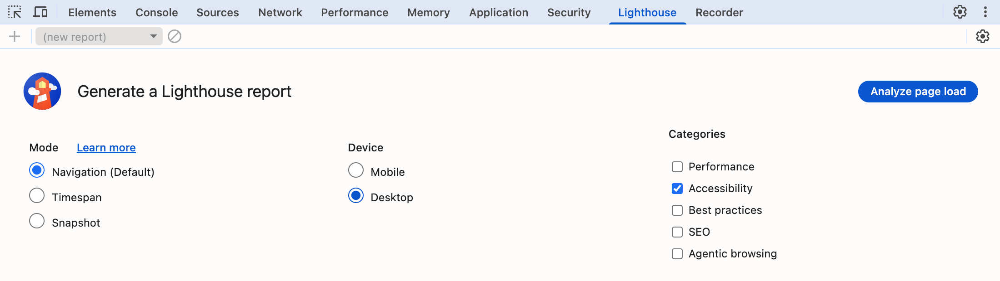
Только доступность, настольный компьютер - Запустите проверку
Нажмите Analyze page load. Lighthouse перезагрузит страницу и через несколько секунд покажет отчёт.
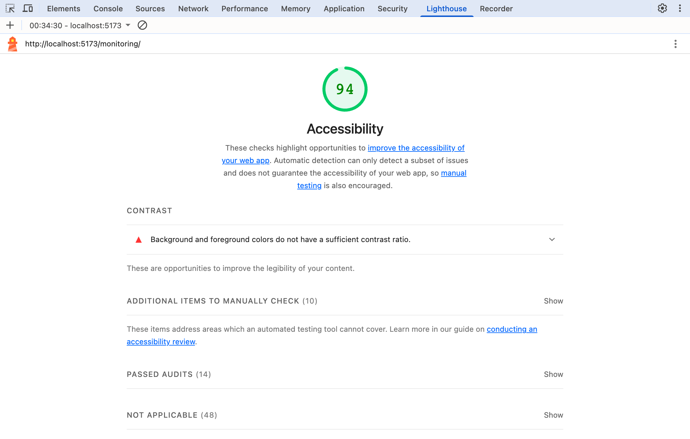
94 из 100: не пройдена одна проверка — контраст - Раскройте проверку
Щёлкните строку с красным треугольником. Под ней появится список элементов, которые её не прошли, с уменьшенными снимками.
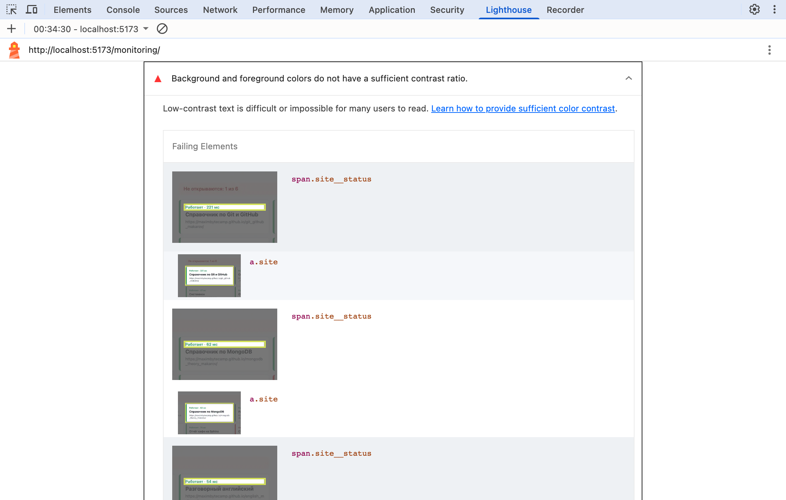
Не прошли зелёные строки «Работает» в карточках - Проверьте страницу сайта
Щёлкните карточку «Старый проект» и снова запустите Lighthouse: кнопка + слева вверху панели начинает новый отчёт.
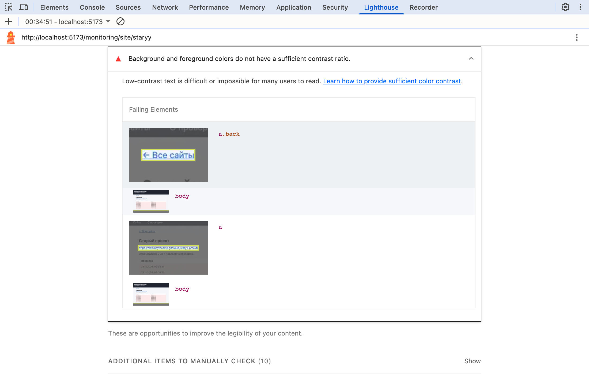
Страница сайта — 91: не прошли две синие ссылки
Страница «Сайты» получила 94, страница сайта — 91, страница «О проверке» — 100. Обе ошибки одного вида: текст слишком мало отличается по яркости от фона. Под словом a.site в списке Lighthouse показывает карточку, внутри которой стоит бледная строка; исправлять нужно саму строку.
Что значит «недостаточный контраст» и как его посчитать?
§3Контраст текста
РазбираемсяОтношение яркостей
Контраст в WCAG — это отношение яркости более светлого цвета к яркости более тёмного. Яркость считается по формуле из красной, зелёной и синей составляющих цвета; зелёная составляющая весит больше всех, потому что глаз к ней чувствительнее. Белый на белом даёт 1:1, чёрный на белом — 21:1. WCAG требует для обычного текста не меньше 4,5:1, для крупного (от 24 пикселей или от 18,66 пикселя жирным) — не меньше 3:1.
Контраст цветов монитора
Норма для обычного текста — 4,5:1. Ссылке не хватало 0,14, и на глаз разница почти незаметна.
Слева — строка статуса. Прежний зелёный #2e9d5b на белой карточке даёт 3,44:1, меньше нормы почти в полтора раза. Справа — ссылки. Тот же синий #2f6fde на белом дал бы 4,72:1 и прошёл бы проверку. Но ссылки стоят на сером фоне страницы #f5f6f9, и на нём контраст падает до 4,36:1. Контраст зависит от пары цветов, поэтому цвет текста проверяют на том фоне, где он стоит. Новые цвета — того же оттенка, только темнее.
В DevTools на вкладке Elements выберите элемент и щёлкните цветной квадратик рядом со свойством color на панели Styles. В открывшейся палитре строка Contrast ratio показывает отношение к фону и галочки норм AA (4,5:1) и AAA (7:1).
ДелаемМеняем цвета
- Замените три цвета
В
src/index.cssзамените синий#2f6fdeна#2563d0в правилахaи.site:hover, зелёный#2e9d5bна#1e7a46в правиле.site__status. Зелёную полоску слева у карточки менять не нужно: это не текст, к ней норма 4,5:1 не относится.monitoring/src/index.css · строки 1–19 * { box-sizing: border-box; } body { margin: 0; font-family: Inter, system-ui, -apple-system, sans-serif; background: #f5f6f9; color: #1f2430; } a { color: #2563d0; } .header { padding: 24px 32px 0; background: #1f2430; color: #ffffff; } .header h1 { margin: 0; font-size: 28px; } .header p { margin: 6px 0 16px; color: #c4cad8; } .nav { display: flex; gap: 4px; } .nav a { padding: 10px 16px; border-radius: 8px 8px 0 0; color: #c4cad8; text-decoration: none; } .nav a.active { background: #f5f6f9; color: #1f2430; font-weight: 600; } .main { max-width: 1000px; margin: 0 auto; padding: 24px 32px; } .summary { padding: 12px 16px; border-radius: 8px; background: #e3f4ea; color: #1f6b3f; font-weight: 600; } .summary--bad { background: #fde8e8; color: #b42318; } .sites { display: grid; grid-template-columns: repeat(auto-fill, minmax(280px, 1fr)); gap: 12px; } .site { display: flex; flex-direction: column; gap: 6px; padding: 16px; border: 1px solid #dfe3eb; border-left: 6px solid #2e9d5b; border-radius: 8px; background: #ffffff; color: inherit; text-decoration: none; } .site--bad { border-left-color: #d23b3b; } .site:hover { border-color: #2563d0; } .site h2 { margin: 0; font-size: 18px; } .site__status { font-size: 13px; font-weight: 600; color: #1e7a46; } .site--bad .site__status { color: #d23b3b; }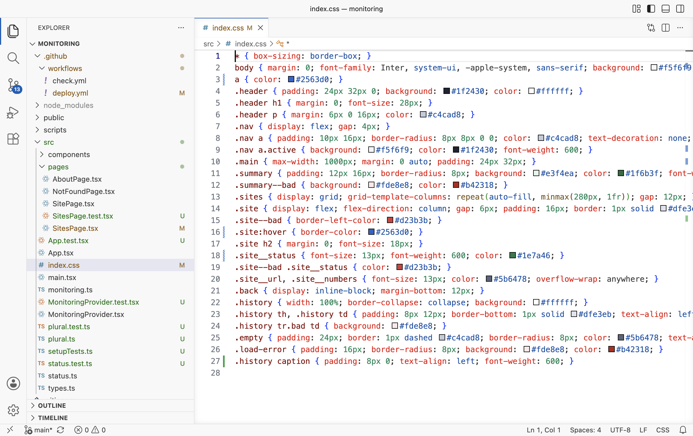
index.css: новые цвета ссылок - Повторите проверку
Vite обновит страницу сам. Запустите Lighthouse снова на странице «Сайты» и на странице сайта.
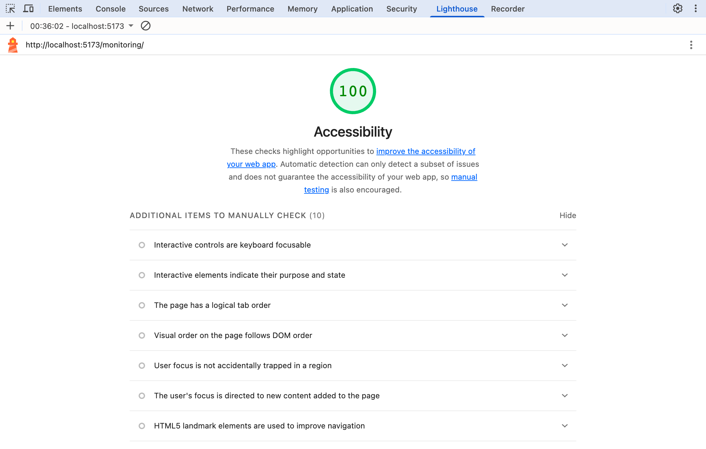
100 на обеих страницах — и десять пунктов для ручной проверки
Оценка 100 значит, что страница прошла все проверки, которые Lighthouse выполняет автоматически. Под оценкой Lighthouse прямо пишет, что автоматическая проверка находит только часть проблем, и перечисляет десять пунктов для ручной проверки. Первый из них — «к интерактивным элементам можно перейти с клавиатуры».
Проверим на опыте, что Lighthouse пропускает.
§4Что пропускает Lighthouse: карточка на div
РазбираемсяКак агент делает «кликабельную» карточку
Когда ИИ-агента просят сделать карточку, по которой можно щёлкнуть, он часто делает её блоком <div> с обработчиком onClick. Обработчик вызывает переход в коде. Мышью такая карточка работает так же, как ссылка. Повторим это в проекте и проверим её тремя способами.
ДелаемОпыт: заменяем Link на div
- Замените карточку
В
src/pages/SitesPage.tsxимпортируйтеuseNavigateвместоLink, получите функциюnavigateв начале компонента и заменитеLinkнаdiv.monitoring/src/pages/SitesPage.tsx · опыт {sites.map((site) => { const check = last?.checks.find((c) => c.id === site.id) return ( <div key={site.id} className={check?.ok ? 'site' : 'site site--bad'} onClick={() => navigate(`/site/${site.id}`)} > <span className="site__status">{statusText(check)}</span> <h2>{site.name}</h2> <span className="site__url">{site.url}</span> </div> ) })}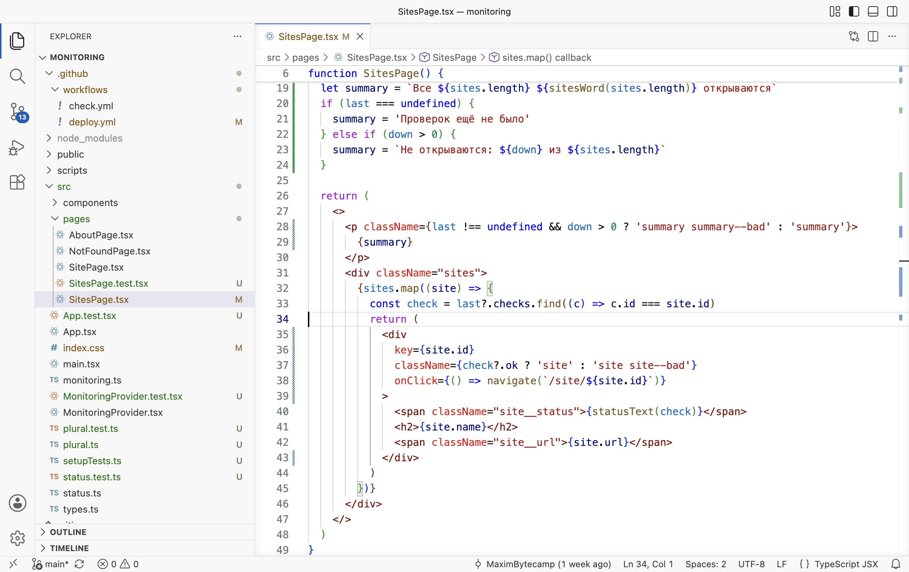
navigate(`/site/${site.id}`)}, внутри span site__status, h2 и span site__url" loading="lazy">Карточка — div с onClick Щёлкните карточку мышью в браузере: открывается страница сайта, как и раньше. Lighthouse на этой странице по-прежнему ставит 100.
- Пройдите страницу клавиатурой
Щёлкните пустое место страницы и нажмите Tab три раза. Первое нажатие выделяет вкладку «Сайты», второе — «О проверке». Третье должно перейти к первой карточке.
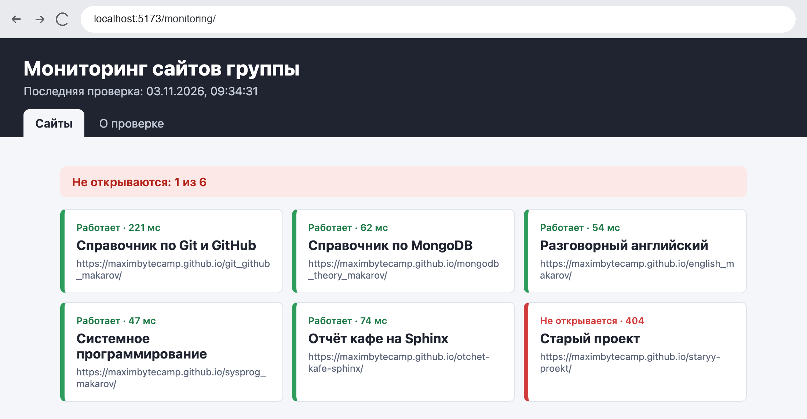
Третье нажатие Tab: карточки пропущены, фокус ушёл со страницы Ни одна карточка не выделена. Клавиша Tab переходит только по элементам, которые браузер считает интерактивными: ссылкам, кнопкам, полям ввода. Блок
divк ним не относится, даже сonClick. С клавиатуры страницы сайтов теперь не открыть. Программа чтения с экрана тоже не назовёт карточку ссылкой. - Запустите тесты из главы 4.1
Терминал · папка monitoring npm test
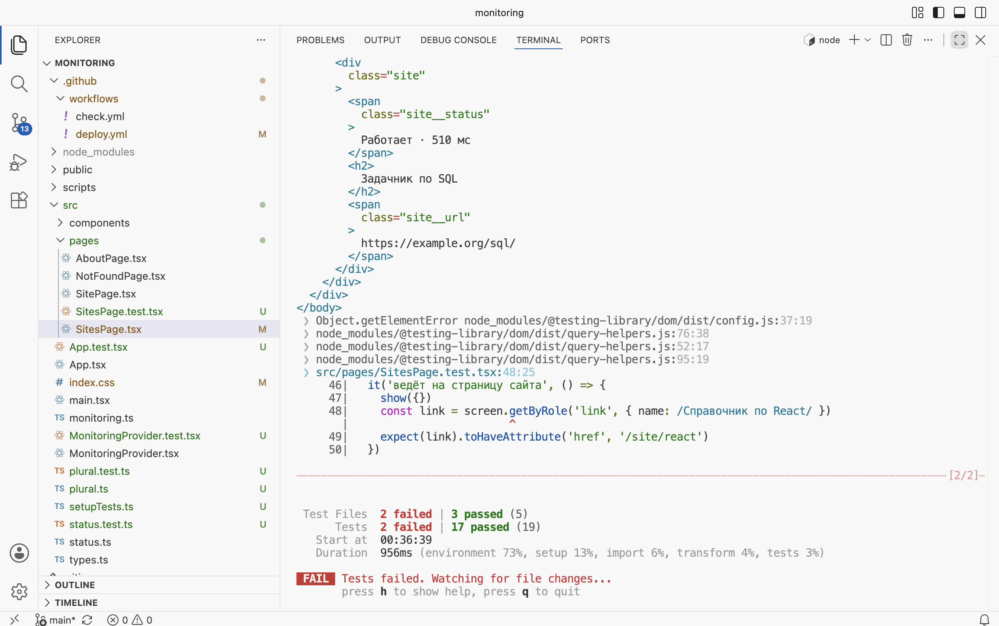
Два теста из главы 4.1 упали Упали тесты «ведёт на страницу сайта» и «по щелчку на карточке открывает страницу сайта». Оба ищут карточку через
getByRole('link', …), и Testing Library сообщает:Unable to find an accessible element with the role "link". Ссылок на странице больше нет. Остановите тесты клавишей q. - Включите правила доступности в линтере
Линтер oxlint, которым Vite настроил проект, проверяет и доступность разметки JSX. Эти правила собраны в плагине
jsx-a11y; его нужно назвать в.oxlintrc.json. Строку проprefer-tag-over-roleразберём в §6.monitoring/.oxlintrc.json { "$schema": "./node_modules/oxlint/configuration_schema.json", "plugins": ["react", "typescript", "oxc", "jsx-a11y"], "rules": { "react/rules-of-hooks": "error", "react/only-export-components": ["warn", { "allowConstantExport": true }], "jsx-a11y/prefer-tag-over-role": "off" } }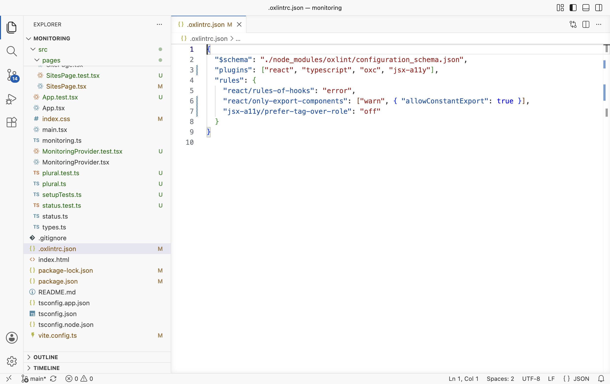
Плагин jsx-a11y в настройках линтера - Запустите линтер
Терминал · папка monitoring npm run lint
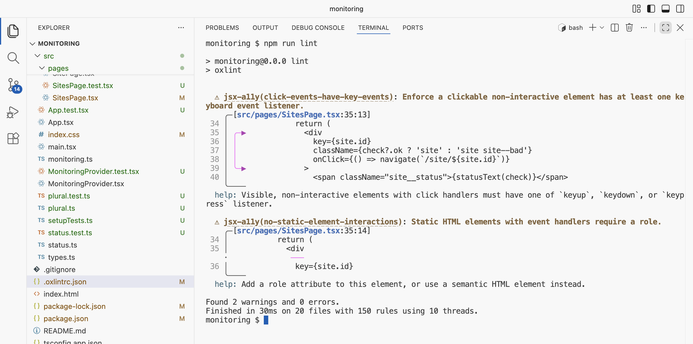
Два предупреждения на строке с div - Верните ссылку
Верните
SitesPage.tsxк версии из главы 4.1 сLink. Снова нажмите Tab три раза.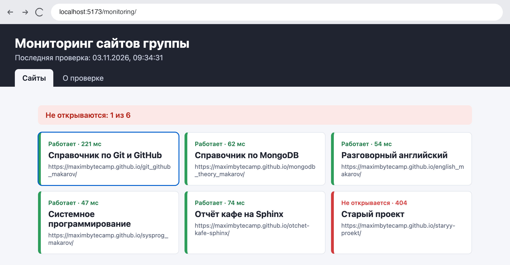
С Link третье нажатие выделяет первую карточку
РазбираемсяЧто поймало ошибку
| Проверка | Карточка на div | Почему |
|---|---|---|
| Щелчок мышью | работает | onClick вызывает navigate |
| Lighthouse | 100, ошибок нет | правила Lighthouse проверяют ссылки, кнопки и элементы с ролью; div с onClick к ним не относится |
| Клавиша Tab | карточки пропущены | div не получает фокус |
Тесты 4.1 через getByRole('link') | 2 упали | Testing Library ищет элементы по роли, как программа чтения |
Линтер с jsx-a11y | 2 предупреждения | правила видят обработчик щелчка на элементе без роли |
В главе 4.1 тесты искали карточки по роли link. Тогда роль была способом найти элемент. Теперь видно, что такой тест заодно проверяет доступность: элемент без роли тест не найдёт. Документация Testing Library по той же причине ставит поиск по роли первым в списке способов.
Линтер предлагает и такой путь: role="link", tabIndex={0} и обработчик клавиш. Так можно повторить поведение ссылки, но придётся сделать вручную всё, что <a> делает сам: переход по Enter, открытие в новой вкладке, адрес в строке состояния. Готовый элемент — Link — надёжнее.
Ссылка на месте. Осталось выяснить, что услышит человек, который до неё дошёл.
§5Дерево доступности: название ссылки и вкладки
РазбираемсяЧто получает программа чтения
Программа чтения с экрана работает не с изображением страницы. Браузер строит для неё дерево доступности — упрощённую копию страницы. У каждого элемента в ней есть роль: ссылка, заголовок, таблица, кнопка. Есть и название — текст, который программа произнесёт. Название ссылки браузер собирает из всего текста внутри неё по порядку.
Карточка на экране и в дереве доступности
Название ссылки — весь её текст по порядку, без оформления.
Программы чтения умеют показать все ссылки страницы списком, и человек выбирает нужную по первым словам. В мониторе пять из шести ссылок начинаются одинаково: «Работает · …». Чтобы найти «Справочник по MongoDB», придётся выслушать начало каждой. На экране статус стоит над заголовком и выглядит подписью к нему; в названии ссылки он оказывается первым.
ДелаемСмотрим дерево доступности в DevTools
- Выберите карточку
Щёлкните правой кнопкой по карточке «Старый проект» и выберите Inspect («Просмотреть код»). В DevTools на вкладке Elements выделится строка
<a class="site site--bad"…>. Справа выберите вкладку Accessibility (если её не видно — кнопка »).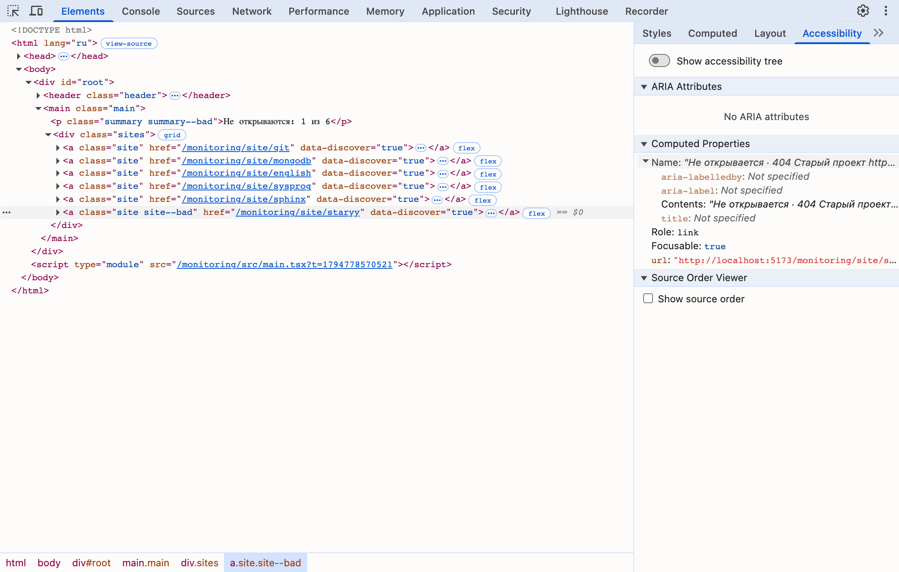
Role: link, Name начинается со статуса В разделе Computed Properties строка Role — роль, строка Name — название, которое услышит человек. Focusable: true значит, что до элемента можно дойти клавишей Tab; у карточки на
divэтого бы не было. - Запишите требование тестом
Запустите
npm testи добавьте вsrc/pages/SitesPage.test.tsxтест после теста о загрузке. Знак^в начале регулярного выражения значит «в самом начале строки».monitoring/src/pages/SitesPage.test.tsx · новый тест it('название карточки начинается с названия сайта', () => { show({}) const link = screen.getByRole('link', { name: /^Справочник по React/ }) expect(link).toBeInTheDocument() })
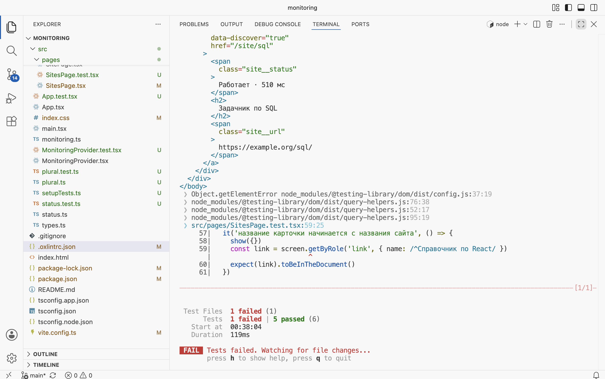
Новый тест падает: название начинается со статуса - Поставьте название сайта первым
В
SitesPage.tsxпоменяйте местами строки с<h2>и статусом.monitoring/src/pages/SitesPage.tsx · карточка return ( <Link key={site.id} to={`/site/${site.id}`} className={check?.ok ? 'site' : 'site site--bad'}> <h2>{site.name}</h2> <span className="site__status">{statusText(check)}</span> <span className="site__url">{site.url}</span> </Link> )
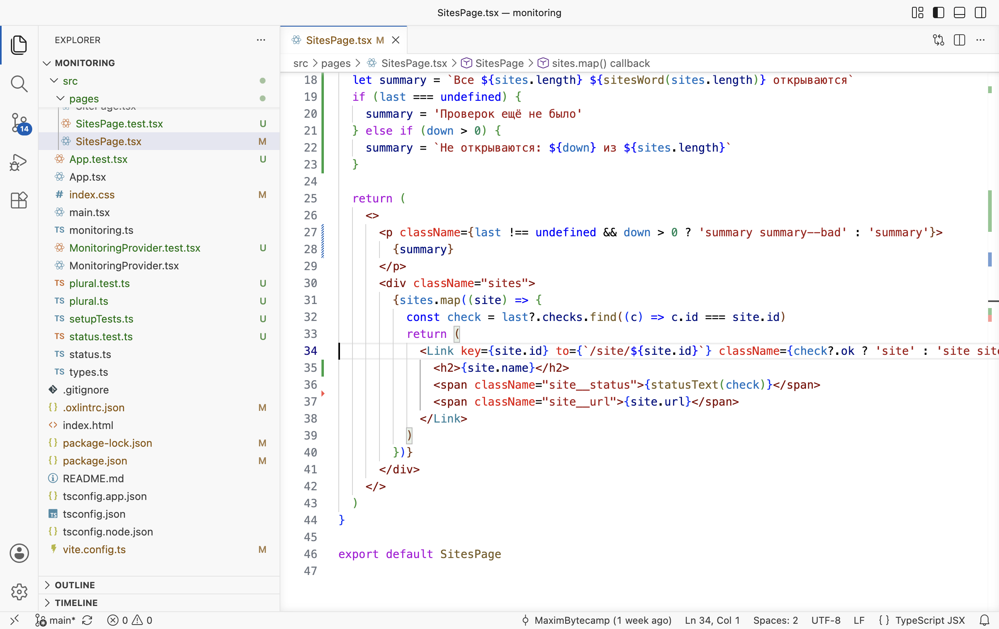
Сначала название, потом статус Тест проходит. Статус теперь стоит под названием и на экране, а в DevTools название ссылки начинается с «Старый проект».
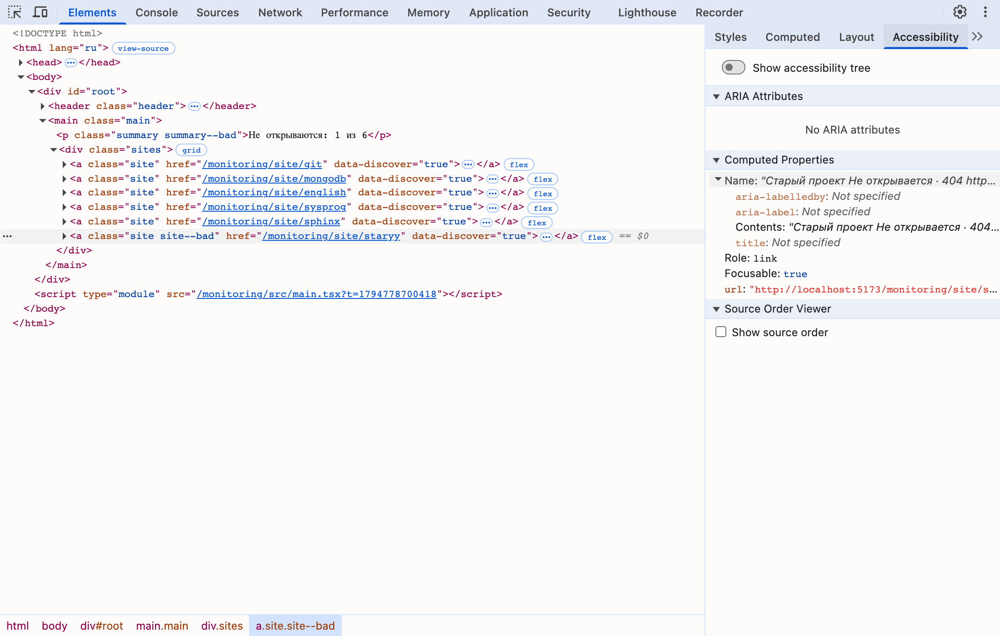
Name: «Старый проект Не открывается · 404 …»
РазбираемсяЗаголовок вкладки
Первое, что программа чтения произносит после перехода на новую страницу, — её заголовок, текст тега <title>. Тот же текст стоит на вкладке браузера, в истории и в закладках. В мониторе он один на все страницы: index.html задаёт «Мониторинг сайтов группы», а приложение его не меняет.
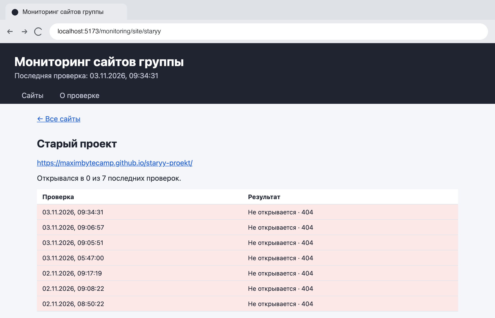
В React 19 тег <title> можно вывести прямо в компоненте страницы. React перенесёт его в <head> документа, где бы он ни стоял в дереве компонентов, и уберёт, когда страница исчезнет. Заголовок из index.html остаётся и виден, пока загружается JavaScript; заголовок React ставится в <head> перед ним, и браузер берёт первый.
ДелаемЗаголовки страниц
- Проверьте заголовок в тесте
В
src/App.test.tsxтест уже открывает страницу сайта щелчком. Добавьте в конец одну проверку:document.title— заголовок документа.monitoring/src/App.test.tsx · конец теста await user.click(screen.getByRole('link', { name: /Справочник по React/ })) const heading = screen.getByRole('heading', { name: 'Справочник по React' }) expect(heading).toBeInTheDocument() const text = screen.getByText('Открывался в 1 из 2 последних проверок.') expect(text).toBeInTheDocument() expect(document.title).toBe('Справочник по React · Мониторинг сайтов группы') })
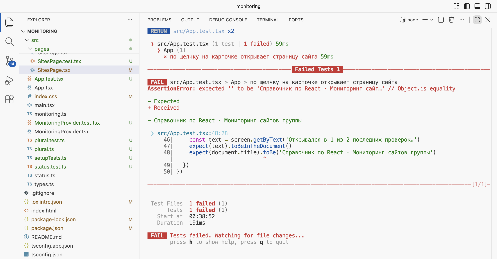
App > по щелчку на карточке открывает страницу сайта; AssertionError: expected '' to be 'Справочник по React · Мониторинг сайт…'; Expected — Справочник по React · Мониторинг сайтов группы" loading="lazy">В тесте заголовок пустой: index.html в jsdom не загружается - Добавьте заголовки
Первой строкой внутри фрагмента
<>каждой страницы поставьте свой<title>. ВSitePage.tsxназвание сайта подставляется в шаблонную строку.monitoring/src/pages/SitePage.tsx · строки 24–28 return ( <> <title>{`${site.name} · Мониторинг сайтов группы`}</title> <Link to="/" className="back">← Все сайты</Link> <h2>{site.name}</h2>
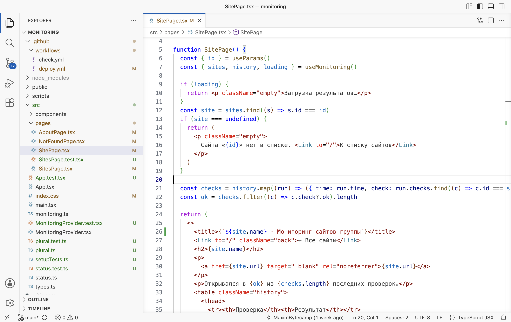
Заголовок страницы сайта В остальных страницах заголовок постоянный:
<title>Сайты · Мониторинг сайтов группы</title>вSitesPage.tsx, «О проверке · …» вAboutPage.tsx, «Страница не найдена · …» вNotFoundPage.tsx. УNotFoundPageсейчас один элемент<p>; оберните его вместе с заголовком во фрагмент<>…</>.На вкладке — название страницы
Запись <title>{site.name} · Мониторинг сайтов группы</title> не работает. Внутри <title> React принимает только одну строку. В этой записи два куска — значение и текст, — и заголовок остаётся пустым: тест с ней падает с тем же expected ''. Шаблонная строка в фигурных скобках собирает их в одну.
Ссылки и страницы названы. Остались сообщения, которые появляются на странице без перехода.
§6Сообщения о загрузке и ошибке
РазбираемсяРоли status и alert
Пока данные загружаются, на странице стоит «Загрузка результатов…». Если файл не загрузился, на её месте появляется сообщение об ошибке. Зрячий человек замечает перемену. Программа чтения прочитает новый текст, только если человек сам до него дойдёт: адрес страницы не менялся, и сигнала о перемене программа не получает.
На вокзале табло показывает поезда, а объявления звучат по громкой связи. «Поезд прибывает на второй путь» говорят спокойно, между другими объявлениями. «Посадка на поезд заканчивается» — сразу, прерывая музыку. Слепой пассажир не видит табло, но слышит объявления. status и alert — два вида объявлений для программы чтения.
На вокзале объявления делает диктор. На странице объявляет программа чтения, и только те элементы, которым задана роль.
Чтобы программа объявила новый текст сама, элементу задают роль-сообщение. Ролей две, они различаются срочностью.
| Роль | Когда программа прочитает новый текст | Сообщение в мониторе |
|---|---|---|
role="status" | после текущей фразы | «Загрузка результатов…» |
role="alert" | сразу, прервав текущую фразу | «Файл sites.json не загрузился: код 404.» |
ДелаемТесты по ролям и роли в разметке
- Ищите сообщения по роли
В
SitesPage.test.tsxперепишите тест о загрузке: сообщение ищется по ролиstatus, текст проверяется у найденного элемента. Название теста меняется на «пока идёт загрузка, сообщает об этом».monitoring/src/pages/SitesPage.test.tsx · тест загрузки it('пока идёт загрузка, сообщает об этом', () => { show({ loading: true }) expect(screen.getByRole('status')).toHaveTextContent('Загрузка результатов…') })
В
src/MonitoringProvider.test.tsxошибка ищется по ролиalert.monitoring/src/MonitoringProvider.test.tsx · проверка const message = await screen.findByRole('alert') expect(message).toHaveTextContent('Файл sites.json не загрузился: код 404.')
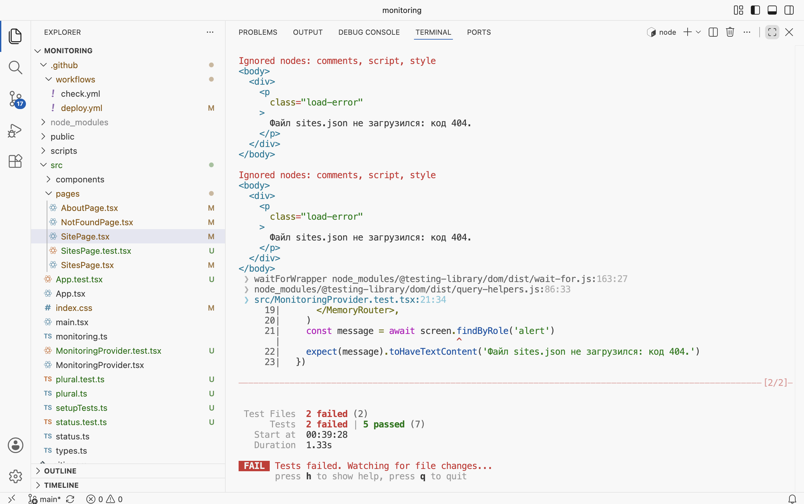
Оба теста падают: текст на странице есть, роли нет - Задайте роли
В
SitesPage.tsxдобавьтеrole="status"к сообщению о загрузке иrole="alert"к сообщению об ошибке.monitoring/src/pages/SitesPage.tsx · строки 9–22 if (loading) { return ( <p className="empty" role="status"> Загрузка результатов… </p> ) } if (error !== '') { return ( <p className="load-error" role="alert"> {error} </p> ) }
В
SitePage.tsxдобавьтеrole="status"к такому же сообщению о загрузке, а у таблицы истории — подпись<caption>. Подпись — название таблицы: программа чтения назовёт его, когда человек дойдёт до таблицы.monitoring/src/pages/SitePage.tsx import { Link, useParams } from 'react-router' import { useMonitoring } from '../monitoring' import { statusText } from '../status' function SitePage() { const { id } = useParams() const { sites, history, loading } = useMonitoring() if (loading) { return ( <p className="empty" role="status"> Загрузка результатов… </p> ) } const site = sites.find((s) => s.id === id) if (site === undefined) { return ( <p className="empty"> Сайта «{id}» нет в списке. <Link to="/">К списку сайтов</Link> </p> ) } const checks = history.map((run) => ({ time: run.time, check: run.checks.find((c) => c.id === site.id) })) const ok = checks.filter((c) => c.check?.ok).length return ( <> <title>{`${site.name} · Мониторинг сайтов группы`}</title> <Link to="/" className="back">← Все сайты</Link> <h2>{site.name}</h2> <p> <a href={site.url} target="_blank" rel="noreferrer">{site.url}</a> </p> <p>Открывался в {ok} из {checks.length} последних проверок.</p> <table className="history"> <caption>История проверок</caption> <thead> <tr><th>Проверка</th><th>Результат</th></tr> </thead> <tbody> {checks.map(({ time, check }) => ( <tr key={time} className={check?.ok ? '' : 'bad'}> <td>{new Date(time).toLocaleString('ru')}</td> <td>{statusText(check)}</td> </tr> ))} </tbody> </table> </> ) } export default SitePage
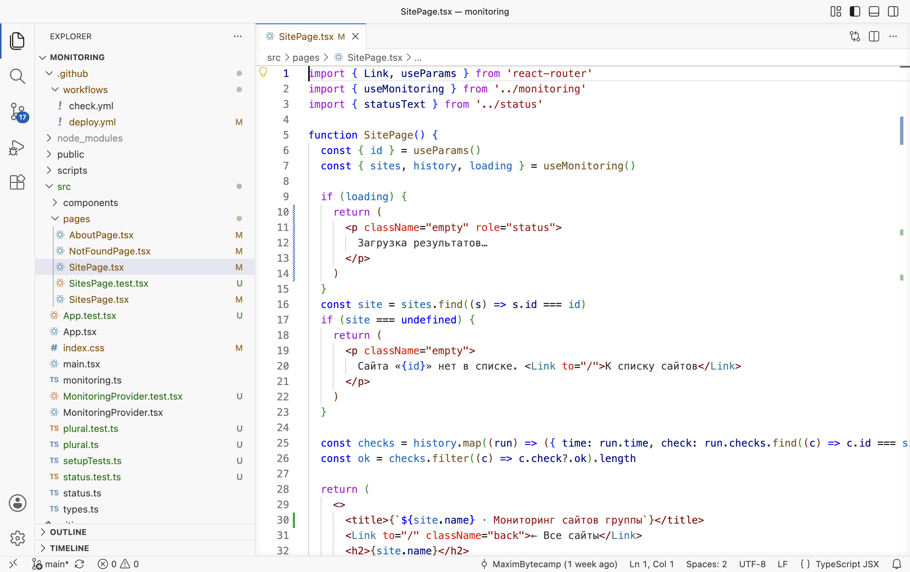
SitePage.tsx: роль сообщения о загрузке 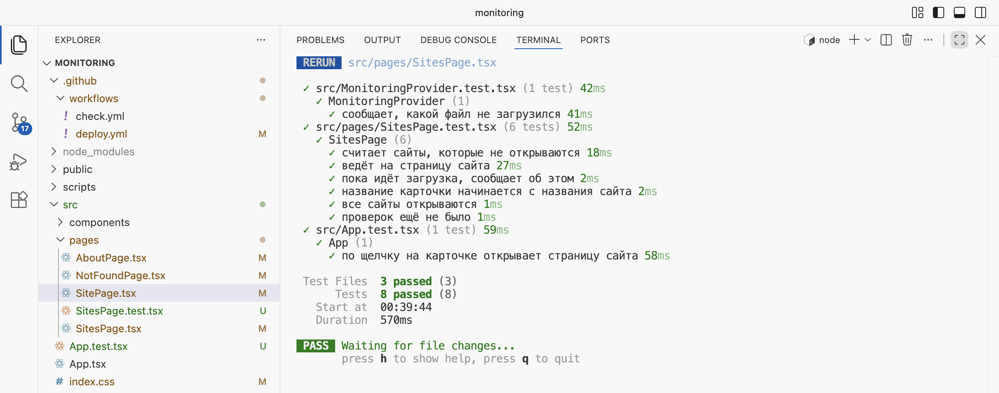
Затронутые файлы тестов прошли
Нажмите a, чтобы Vitest повторил все тесты: их 20, все проходят.
РазбираемсяПочему одно правило линтера выключено
С ролью status линтер выдаёт предупреждение jsx-a11y(prefer-tag-over-role): Prefer `output` over `role` attribute `status`. У тега <output> роль status уже есть, и правило советует взять его. Но <output> по стандарту HTML показывает результат вычисления или действия пользователя, например сумму в калькуляторе. Надпись о загрузке сообщает о состоянии страницы, поэтому в .oxlintrc.json из §4 это правило выключено строкой "jsx-a11y/prefer-tag-over-role": "off".
Выключать правило линтера можно, когда понятно, почему его совет не подходит. Такое решение записывают в .oxlintrc.json: там его видит каждый, кто читает проект. Если агент выключает правило, чтобы убрать предупреждение, спросите у него причину.
Осталось сделать так, чтобы правила доступности проверялись перед каждой публикацией.
§7Линтер перед публикацией
ДелаемШаг линтера в deploy.yml
Предупреждения линтера не останавливают работу: npm run lint с двумя предупреждениями завершается успешно, с кодом 0. В конвейере это значит, что сайт опубликуется. Ключ --deny-warnings превращает предупреждения в ошибку.
- Добавьте шаг
В
.github/workflows/deploy.ymlперед шагом «Запустить тесты» добавьте шаг линтера. Два минуса--отделяют ключи npm от ключей, которые получит сам oxlint.monitoring/.github/workflows/deploy.yml · шаги - name: Установить зависимости run: npm ci - name: Проверить код линтером run: npm run lint -- --deny-warnings - name: Запустить тесты run: npm test - name: Собрать сайт run: npm run build
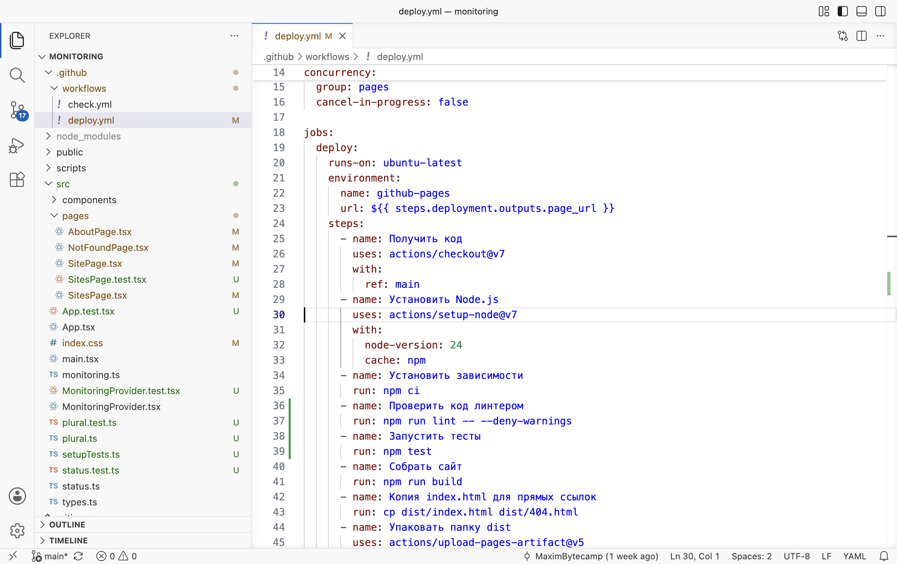
Линтер, тесты, сборка - Проверьте команду у себя
Терминал · папка monitoring npm run lint -- --deny-warnings
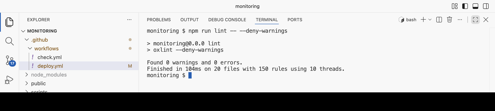
oxlint --deny-warnings; Found 0 warnings and 0 errors" loading="lazy">Ни одного предупреждения - Отправьте изменения
Сделайте коммит и
git push. На вкладке Actions в журнале запуска «Публикация на GitHub Pages» появится шаг «Проверить код линтером» перед тестами.
Три проверки доступности и что каждая ловит
Линтер и тесты запускаются в deploy.yml, Lighthouse и клавиатура — руками перед сдачей.
Каждая проверка находит свой вид ошибок. Линтер проверяет код и страницу не открывает. Тесты показывают компонент на странице jsdom, где нет цветов, поэтому контраст не проверить. Lighthouse проверяет готовую страницу, но только размеченные элементы. Порядок клавиши Tab и то, что услышит человек, по-прежнему проверяются руками.
§8Частые ошибки
Сообщения получены на проекте monitoring.
| Что видно | Почему | Что сделать |
|---|---|---|
| Lighthouse 100, а карточку не открыть с клавиатуры | Карточка сделана из div с onClick; правила Lighthouse такие элементы пропускают | Взять Link или <button>; включить плагин jsx-a11y |
Unable to find an accessible element with the role "link" | Элемента с такой ролью на странице нет | Посмотреть разметку под сообщением: ссылка заменена на div или span |
Unable to find an accessible element with the role "status" | У сообщения нет атрибута role | Добавить role="status" или role="alert" |
expected '' to be '… · Мониторинг сайтов группы' | В <title> текст и значение записаны отдельно: {site.name} · … | Собрать одну строку: {`${site.name} · …`} |
| Цвет прошёл проверку на белом, а Lighthouse его не принимает | Текст стоит на другом фоне, например сером #f5f6f9 | Проверять пару «текст — фон», на котором он стоит |
| Предупреждения линтера есть, а публикация прошла | Без ключа oxlint с предупреждениями завершается с кодом 0 | Запускать в конвейере npm run lint -- --deny-warnings |
§9Проверьте себя
Lighthouse поставил странице 100. Значит ли это, что она доступна?
Нет. Lighthouse проверяет только то, что можно найти автоматически, и сам перечисляет десять пунктов для ручной проверки. Карточка на div в этой главе получила 100, но не открывалась с клавиатуры.
Почему тесты из главы 4.1 упали, когда карточка стала div, хотя мышью она работала?
Тесты ищут карточку через getByRole('link', …). У div нет роли ссылки, поэтому Testing Library его не находит — так же, как программа чтения с экрана.
Из чего браузер собирает название ссылки-карточки?
Из всего текста внутри ссылки по порядку: статус, заголовок, адрес. Поэтому порядок элементов внутри ссылки важен: первыми должны идти слова, по которым ссылку узнают.
Чем role="status" отличается от role="alert"?
Обе роли заставляют программу чтения объявить новый текст. С status программа сначала дочитывает текущую фразу. С alert она прерывает фразу и читает сообщение сразу. Загрузка — status, ошибка — alert.
Почему тест не может проверить контраст?
Тесты работают на странице jsdom, которая ничего не рисует: стилей и цветов на ней не считают. Контраст проверяют Lighthouse и палитра в DevTools на настоящей странице.
Что произойдёт на GitHub, если в main отправить карточку на div?
Шаг «Проверить код линтером» с --deny-warnings завершится ошибкой из-за двух предупреждений jsx-a11y, тесты, сборка и публикация будут пропущены.
Шпаргалка
<title>{`${name} · Сайт`}</title> в компоненте страницыrole="status" — спокойно, role="alert" — сразу<caption> — название таблицыgetByRole('link', { name: /^Название/ }), findByRole('alert'), document.title"plugins": [..., "jsx-a11y"], в конвейере npm run lint -- --deny-warningsИтог главы
- Страницей пользуются не только мышью и глазами: клавиатурой, программой чтения с экрана, с увеличением. Требования к доступности собраны в WCAG, российский ГОСТ Р 52872-2019 основан на WCAG 2.1.
- Lighthouse в DevTools нашёл в мониторе только слабый контраст: зелёный статус 3,44:1 и синие ссылки 4,36:1 при норме 4,5:1. Новые цвета дали 100 на обеих страницах.
- Карточка на
divсonClickработает мышью и получает 100 в Lighthouse, но не открывается с клавиатуры. Её поймали тесты по ролиlinkиз главы 4.1 и линтер с плагиномjsx-a11y. - Дерево доступности в DevTools показывает роль и название элемента. Название карточки начиналось со статуса; тест закрепил требование, и заголовок сайта стал первым. Каждая страница получила свой
<title>. - Сообщения о загрузке и ошибке получили роли
statusиalert, таблица — подпись<caption>; тесты ищут их по ролям. Линтер с--deny-warningsстоит вdeploy.ymlперед тестами.
Источники
- W3C — WCAG 2.2, 1.4.3 Contrast (Minimum)
- ГОСТ Р 52872-2019 «Интернет-ресурсы и другая информация, представленная в электронно-цифровой форме…»
- ВОЗ — Blindness and vision impairment (10.02.2026)
- WebAIM — The WebAIM Million (февраль 2026)
- Chrome for Developers — Lighthouse accessibility score
- Chrome for Developers — Accessibility features reference (вкладка Accessibility)
- React — <title>
- MDN — ARIA: status role
- MDN — ARIA: alert role
- Testing Library — About Queries, Priority
- Oxc — правила линтера (jsx-a11y)